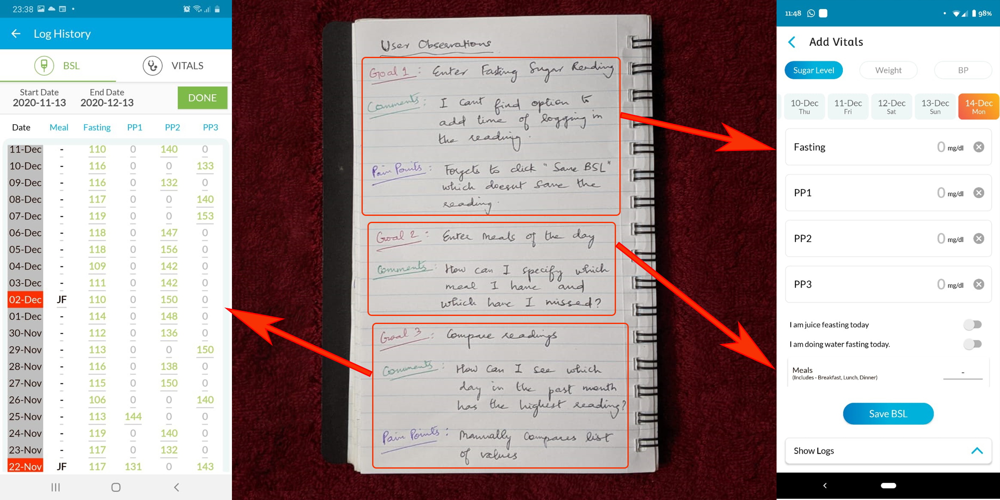
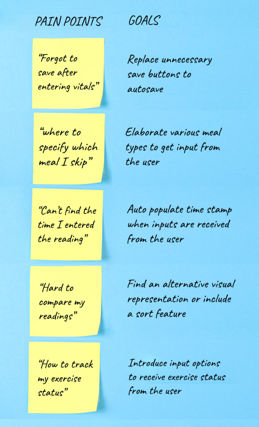

Medical App Re-Design
Mobile App - User research & UX Design
Performing user review and observation to uncover painpoints and provide design solution
Background
This is a freelance pitch for "Freedom From Diabetes" clinic. Their present app available here is currently intended only for members who have registered for their programs. This scope could be extended by exntending this for other people who wants to monitor their blood sugar level on a daily basis and also to people who are currently not registerd members but are potential customers. This way they can reach a wide range of potential population that creates a win-win situation for both the business as well as the users.
Research and Analysis
I started out by observing a user while using the application. Following is an overview of the observation notes:
I was able to interview a couple of other potential users who are diagonised with diabetes and are trying to self-manage their sugar levels by testing it themselves with a glucometer. These are the few comments I received from them that they would like to see in a self-managing app for diabetes.
- "I would like to see a dashboard that displays a graph related to my level of blood sugar that needs to be filtered based on daily/weekly/monthly basis"
- "Diet and Exercise are major in controlling diabetes and hence it will be helpful to input frequencies and accomplishment status for both of those on a daily basis"
- "Being diabetic and slightly on the higher side of the BMI, weight management and monitoring assist is what I want to monitor and keep track. A weight target and a progress towards it is what I am looking for in this app"
I discussed with a diabetologist as well to see what the basic details are that a diabetic patient have to monitor and keep track of. His response was a summary of the above comments from the potential users of the app as well.
Task Analysis
Based on these user research, the pain points are uncovered which are then converted into goals/action items:
The primary tasks are listed out from the goals and the features for this iteration are then consolidated and prioritized:
- Ensure no data loss by provide mandatory save button ot auto-save if the user forgets to save and navigates
- Provide meal types for the user to choose from to indicate which they ate and which they skipped
- Include time stamp whenever vitals are entered
- Report daily summaries on sugar levels, weight and meal frequenies for easy identification of patterns
- Allow user to indicate activity/exercise status
Considering the features present in the current app, based on the user observation and comments, various possibles designs have been tried out and finally narrowed down.
Feature List & Interface Design
Features for the tasks are then listed out and the appropriate interfaces are thought of.
- Task1: Ensure no data loss by provide mandatory save button ot auto-save if the user forgets to save and navigates
Feature: Add a save button in the add vitals page and all other navigations must be controlled by auto-save option - Task2: Provide meal types for the user to choose from to indicate which they ate and which they skipped
Interface: Include buttons with a small picture and meal type specified underneath for user selection. Provide options to add additional meal options - Task3: Include time stamp whenever vitals are entered
Feature: Auto-populate time stamp whenever readings are entered by the user - Task4: Report daily summaries as graphs on sugar levels, weight and meal frequenies for easy identification of patterns
Feature: Sort option and filter optio to choose what to display for easy comparison. Both numerical and graphical visualisations have to be provided - Task5: Allow user to indicate activity/exercise status
Feature: Include radio button option to choose completion status or skip status for activity/exercise
Design Rough Sketches
The interface design is then implemented into the design. Rough design sketches are then sketched that covers easy accomplishment of all the tasks.
These rough screen sketches are then made into paper prototypes which are then user tested to ensure all the pain points are addressed. These are then mapped into high fidelity prototypes with all the visualizations that are again tested and handed over for development.